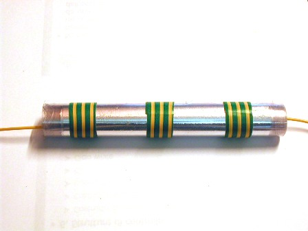
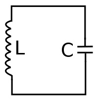
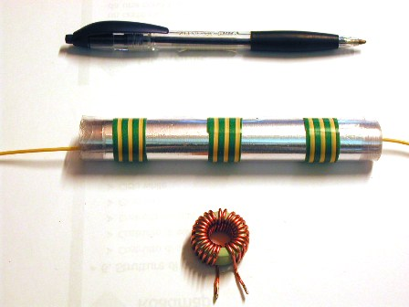

Capita talvolta di giungere al risultato di un problema non per la via più diretta ma seguendo ragionamenti indiretti e magari macchinosi, che alla fine forniscono però il risultato cercato.
A volte questo metodo è l'unico disponibile, a volte lo si segue "per sfizio", come è capitato a me per questa estemporanea "analisi" che vado a dire.
Come si vedrà, il metodo è talmente indiretto che sembra proprio tirato per i capelli.
Tutto è nato da... una cassetta di deliziosissima uva Regina di Puglia presa al mercato alla fine della scorsa estate.
Grani grossi e durissimi, un po' moscata, dolce come il miele, insomma un babbbà!
L'insieme dei grappoloni (giganteschi) era circondato da un nastro di plastica trasparente; cosa succede tirando via il nastro?
Mi viene l'insano proposito di definire il tipo di plastica con un metodo che ricorda da vicino il giro dell'oca!
Sì, assaggiando l'uva mi è venuto proprio questo proposito... vedete un po' con chi avete a che fare.
Ho ragionato così: se con quel nastro di plastica costruisco un CONDENSATORE e ne riesco a misurare abbastanza precisamente la capacità, conoscendo la superficie delle armature e lo spessore della plastica stessa posso risalire alla costante dielettrica... e da questa al materiale!
Detto fatto.
Con un calibro centesimale ho misurato lo spessore del foglio: 18 centesimi di mm.
Con la pellicola di alluminio presa in cucina ho ritagliato due striscie da 48x11 cm (528 cmq)
Ho sovrapposto bene in maniera alternata i due ritagli di alluminio a due striscie leggermente più grandi di plastica ex uva ed ho avvolto il tutto strettamente, mettendo i due reofori di uscita, uno per armatura.

Ecco fatto un bel condensatore per alta tensione, di capacità seguente:
C = ε S/d , dove C è la capacità in pF, S la superficie delle armature in cmq, d la distanza in mm ed ε la costante dielettrica.
Se il dielettrico fosse aria (ε=1) la capacità sarebbe di 2933 pF; per essere più precisi arrotondiamo ad un 1% in meno, stimando un non perfetto affacciamento delle armature tra di loro ed un non perfetto arrotolamento. Viene cosi una capacità più realistica di 2904 pF.
Andiamo ora a misurare quella effettiva, dato che il dielettrico non è aria.
Questo è un po' più complicato (ho detto che è come il giro dell'oca!), e presuppone un oscilloscopio, un generatore di alta frequenza ed una induttanza di valore noto.
Avendo naturalmente tutte e tre le cose (altrimenti che ci sto a fare con tutto questo discorso?) ho collegato in parallelo all'induttanza nota il condensatore ignoto formando il classico circuito LC parallelo.


Il circuito LC parallelo ha una sua precisa frequenza di risonanza; accoppiando con un piccolo link questo circuito all'oscilloscopio ed al generatore, con la sintonia di quest'ultimo ho cercato la frequenza di risonanza (all'oscilloscopio si vede una sinusoide che improvvisamente aumenta molto di ampiezza).
La frequenza di risonanza è stata trovata a 118 KHz, su una induttanza nota di 165 μH.
Siamo a cavallo, basta una formuletta!
C = 1012/4π2Lf2
dove C è la capacità in pF, L l'induttanza in μH ed f la frequenza in KHz.
Sostituendo i valori viene una capacità di 11025 pF.
Abbiamo visto che se il dielettrico fosse aria la capacità sarebbe 2904 pF, e che quella misurata col dielettrico ex uva è di 11025 pF: basta fare il rapporto e ci siamo!
11025/2904=3,80
Calcolato che 3,80 è la costante dielettrica del nostro foglio di plastica, basterà controllare una tabella delle costanti... et voila!
Andiamo a prendere il Radio Handbook, che sentenzia: 3,2-3,9 per l'acetato di cellulosa... alleluja, proprio nel range!
Il foglio (lo sapevo anche prima ma ho voluto giocare un po') è volgarissimo acetato, come quello per i lucidi di scuola.
Ora avete capito perchè ho titolato una "analisi" per vie MOLTO traverse"?